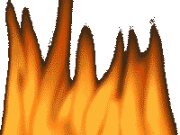

| Alternative Rock • Grunge • Local Music • Est. 1998 |

THE NEON SHADOWS

MEET THE BAND |
| HOME | THE BAND | SHOWS | DEMOS |
|
Four Guys, One Sound, Infinite Energy
The Neon Shadows formed in the summer of 1998 when four musicians from different backgrounds came together with a shared vision: to create music that captures the raw energy of the underground while pushing the boundaries of what alternative rock can be. |
|
|


|
The Shadow Chronicles
Summer 1998: Danny and Alex meet at a Nirvana tribute show at the Stone Pony. Instant musical chemistry leads to jamming in Danny's garage. Fall 1998: Mike joins after his death metal band "Screaming Void" breaks up. His Rickenbacker bass adds the low-end power they were missing. Winter 1998: Jake answers their "Drummer Wanted - Must Rock Hard" flyer posted at Guitar Center. First practice session lasts 6 hours. Spring 1999: First official gig at Danny's garage party. Neighbors call the cops twice, but 50+ people stay until the end. Summer 1999: Land regular gigs at local venues including Murphy's Pub, The Basement, and college parties throughout NJ. Fall 1999: Record first demo at Mike's cousin's 8-track studio. "Electric Nights" becomes an instant local hit. Winter 1999: Booked as opening act for Static Drive's Y2K show at The Underground - their biggest opportunity yet! |
|
Musical DNA
Core Influences: • Nirvana • Pearl Jam • Soundgarden • Alice in Chains • Stone Temple Pilots • Smashing Pumpkins • Radiohead The Neon Shadows Sound: We take the raw energy of grunge, add the experimental edge of alternative rock, and inject it with the urgency of punk. Our songs deal with real issues - alienation, relationships, growing up in the shadow of the millennium. What Makes Us Different: While other bands are either going completely mainstream or staying underground, we're forging a middle path. We want to rock hard but also make people think. Every song tells a story, every show is an experience. |
|
Shadow Zone Secrets
• Danny writes lyrics on napkins, receipts, and anything he can find • Alex owns 47 guitar picks but can never find one when he needs it • Mike's bass cost more than his car (and it's worth it) • Jake has broken 12 drum sticks this month alone • The band name came from a neon sign outside the studio where they first jammed • They've eaten more pizza than any four humans should • Their van has broken down 8 times but never on the way to a gig |
|
Home |
The Band |
Shows |
Demos
Member of the Alternative Music Ring © 1999 The Neon Shadows. All Rights Reserved. Last Updated: 12/20/1999 | Webmaster: Danny Rodriguez |